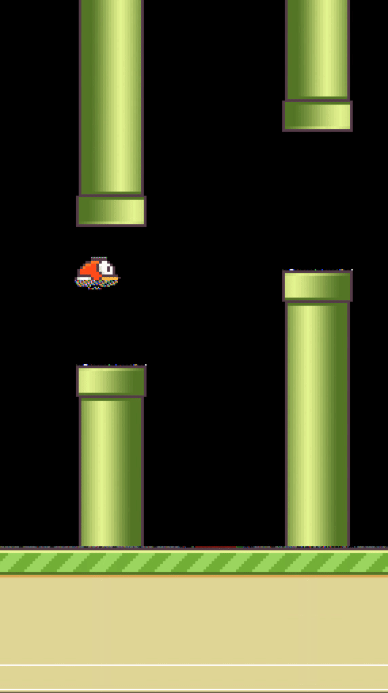
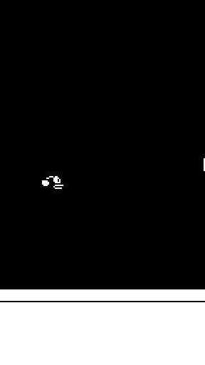
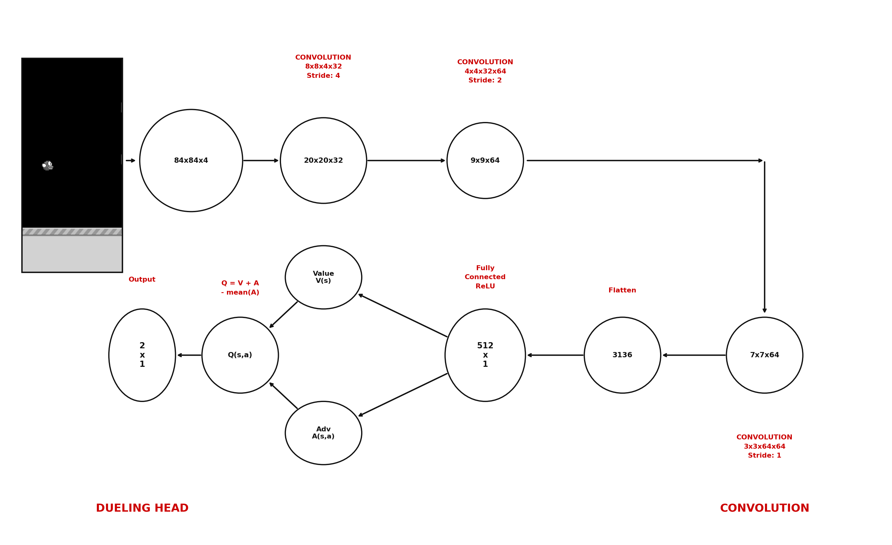
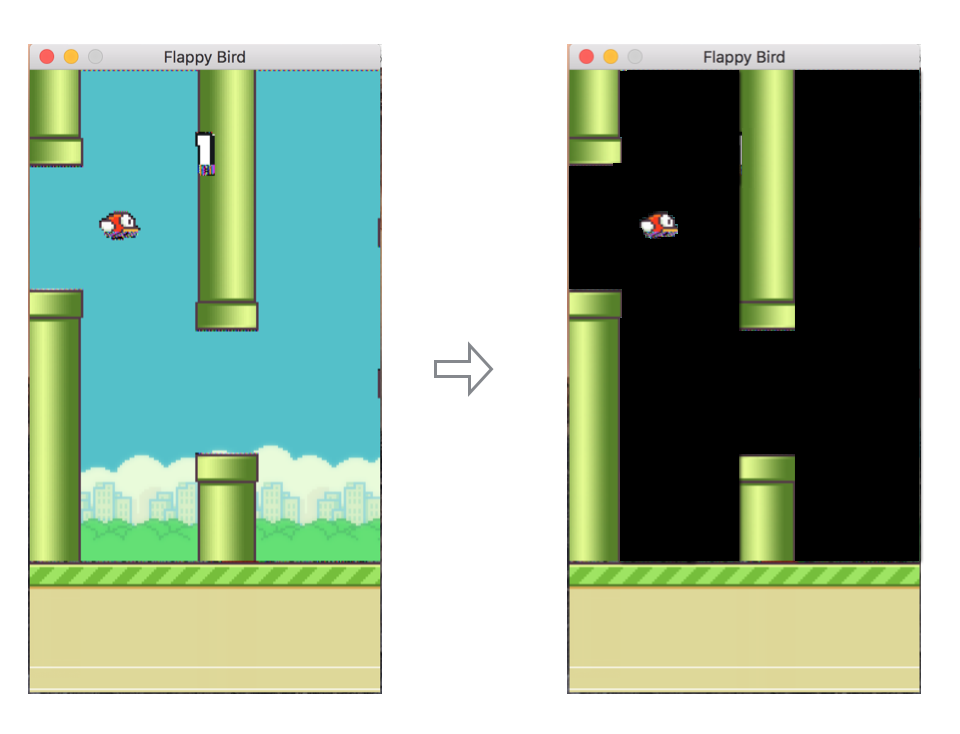

RGB agent

Grayscale agent

Threshold agent — best performer
This project modernises a 10-year-old Flappy Bird DQN implementation (yenchenlin/DeepLearningFlappyBird, TensorFlow 0.7, Python 2) into a state-of-the-art Deep Reinforcement Learning system using PyTorch. Going well beyond the tutorial baseline — which uses a hand-crafted 2-D state vector with a plain MLP — this implementation trains directly from raw pixels via a Dueling CNN combined with Double DQN, Prioritized Experience Replay (PER), and a soft τ-update target network. An ablation study across three preprocessing modes (grayscale, binary threshold, and full RGB) reveals that binary thresholding — despite using fewer training episodes — dramatically outperforms grayscale, reaching a mean score of 282 vs. 19, highlighting the impact of input representation on CNN convergence in pixel-based RL.
🧠 Dueling CNN
Three convolutional layers feed into separate Value V(s) and
Advantage A(s,a) streams. Combined as
Q = V + A − mean(A), the network learns which states are
inherently good independently of which action to take.
🔁 Double DQN
Decouples action selection (policy net) from action evaluation (target net), eliminating the overestimation bias of vanilla DQN and producing more accurate Q-value estimates throughout training.
⚡ Prioritized Experience Replay
Transitions with high TD-error are sampled more frequently, focusing learning on the most informative experiences. Combined with a protected 10% buffer segment that is never overwritten, catastrophic forgetting is minimised.
🎯 Soft Target Update
Instead of a hard copy every N steps, the target network is updated
every step via θ_target ← τ·θ + (1−τ)·θ_target with τ = 0.005,
giving smoother and more stable training dynamics.
🎨 Preprocessing Ablation Study
Three input modes — grayscale, binary threshold, and RGB — are compared across the same architecture. Frames are resized to 84×84 and stacked across 4 timesteps to encode motion, stored as uint8 to keep buffer memory under 700 MB.
✨ Brightness Jitter Augmentation
Random brightness scaling × uniform(0.85, 1.15) is applied to training batches — not during data collection — improving robustness without destabilising the target values used for learning.

Three convolutional layers (8×8/4, 4×4/2, 3×3/1) extract spatial features from
stacked frames. The feature map is then split into two streams:
a Value stream V(s) estimating how good the current state is,
and an Advantage stream A(s,a) estimating the relative value of each action.
The combined output is: Q(s,a) = V(s) + A(s,a) − mean(A(s,·))

Raw 288×512 game frames are resized to 84×84 and preprocessed in one of three modes, then stacked across 4 consecutive frames to give the agent a sense of motion:
Resize + luminance → (4, 84, 84). Baseline mode.
Grayscale + binarise at 127 → pure black/white (4, 84, 84). Cleaner edges.
Resize + keep all 3 channels → (12, 84, 84). Larger input, more information.
| Mode | Training episodes | Mean score | Max score | Min score |
|---|---|---|---|---|
| Grayscale | 1550 | 19.52 | 66 | 0 |
| RGB | 500 | 124.68 | 561 | 8 |
| Threshold | 500 | 282.12 | 1221 | 3 |


Score per episode

TD loss

Q-max
The most significant finding is the performance gap between preprocessing modes. Despite training for only 500 episodes — compared to 1550 for grayscale — the threshold agent achieved 14× higher mean score (282 vs. 19) and nearly 19× higher max score (1221 vs. 66). Binary thresholding removes background texture and colour gradients, leaving only the structural edges that matter for the task (pipe boundaries, bird position). This dramatically reduces the complexity of the CNN's learning problem.
The RGB agent, with its 12-channel (4 frames × 3 channels) input, outperformed grayscale despite the larger input dimensionality, suggesting that colour information provides useful signal even in this environment. However, RGB requires more training time and GPU memory than grayscale.
The Double DQN architecture (decoupling action selection from evaluation) combined with Dueling streams and PER produced stable training curves without catastrophic forgetting, as evidenced by the smooth Q-max growth and loss decay in the grayscale run. The protected replay segment — retaining the first 10 % of experiences — preserved early exploratory behaviour that is otherwise lost to overwriting in standard buffers.
Input preprocessing is not a minor implementation detail — it is a primary driver of convergence speed in pixel-based RL. Binary thresholding, borrowed from the original DQN paper, outperforms both grayscale and RGB on this task with fewer training episodes.
Nhut Han Pham
UTS — 2026